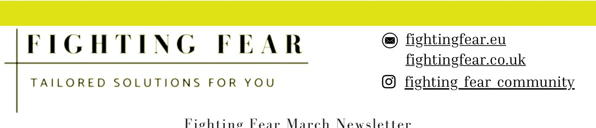
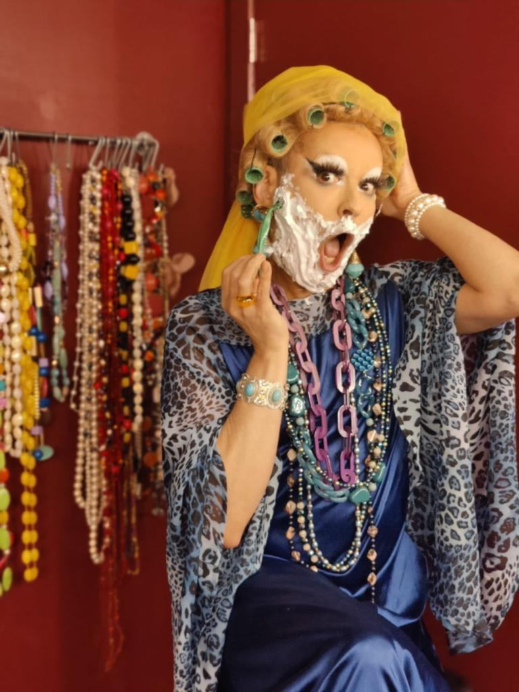
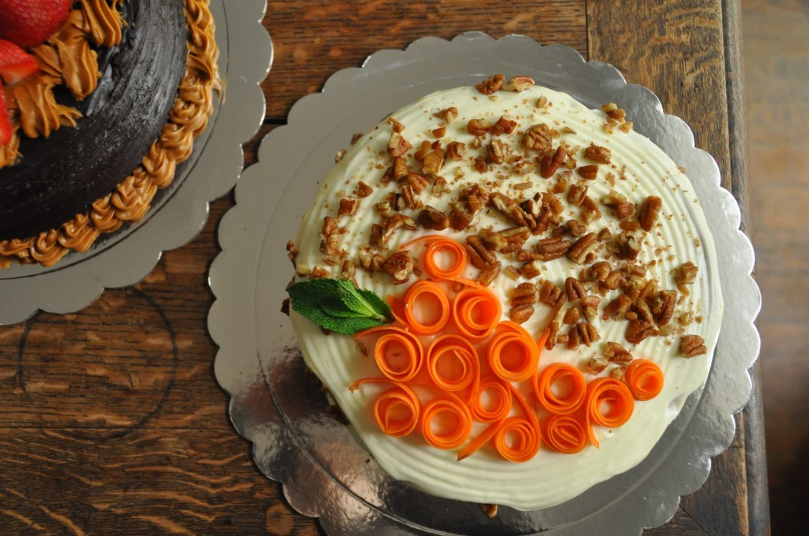
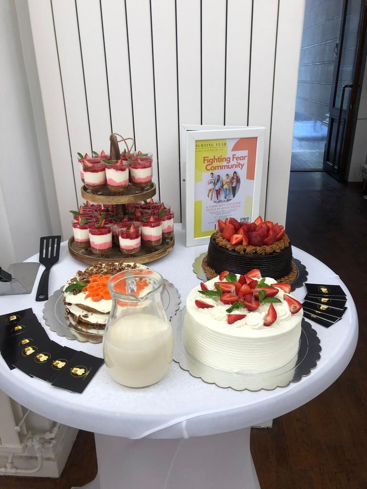

Bilingual marketing and social media professional building community-first content and campaigns across the UK and China.
Gloria moved from China to the UK to study, completing a Master's in Media and Public Relations at Newcastle University. Since then she's built hands-on marketing and social media experience on two continents: running day-to-day content, campaigns and community engagement for a UK organisation, and earlier, marketing and analytics work for a media agency in Beijing. She's bilingual in English and Chinese, and brings a genuinely cross-cultural eye to every campaign she works on — from how a message lands with different audiences to coordinating teams spread across time zones.
A queer-led community and mental health support organisation. Gloria owned social media and content end-to-end for two years, across a fully remote team spanning multiple countries.
Owned the organisation's content calendar and posting schedule end-to-end across all platforms, and led market analysis with a cross-functional team of 15+, driving 21% growth in social media followers.
Gloria's role: as the organisation's Social Media & Marketing Manager, she owned day-to-day execution and reporting, and recruited, trained and managed the volunteers and junior staff who ran social operations. The 15+ figure reflects the wider cross-functional group — including those volunteers and other departments — she coordinated with specifically on this market analysis.
Wrote and designed the organisation's monthly community newsletter — board updates, member resources, and upcoming events — sent to the Fighting Fear community and shared across social channels.

Marketed and promoted in-person fundraiser events, including the Kiki Kitschn Drag Brunch, identifying and engaging potential attendees on social media and contributing to an 18% increase in ticket sales.



From the Kiki Kitschn Drag Brunch fundraiser (30 April 2023) — one of the in-person events Gloria helped market and promote through Fighting Fear's social channels.
“The team worked fully remotely across time zones worldwide, which made things slow whenever problems came up. I mapped everyone's working hours to find a shared window when the whole team was free, and set up a daily issues log so problems got raised and solved in one place instead of scattered across time zones.”
— on coordinating Fighting Fear's distributed team, including colleagues in Thailand and the Netherlands
A media and marketing agency in Beijing. Gloria worked directly on client accounts, translating strategy and content between Chinese and English audiences.
Monitored social media analytics to gather insights for optimising campaign performance and shaping future marketing strategy, resulting in a 23% increase in ROI.
Created content that achieved a 16% increase in social media followers and a 24% boost in engagement across client accounts.
Worked directly with external client accounts, managing relationships and expectations across roughly 5 concurrent campaigns, and translated and localised marketing content between Chinese and English.